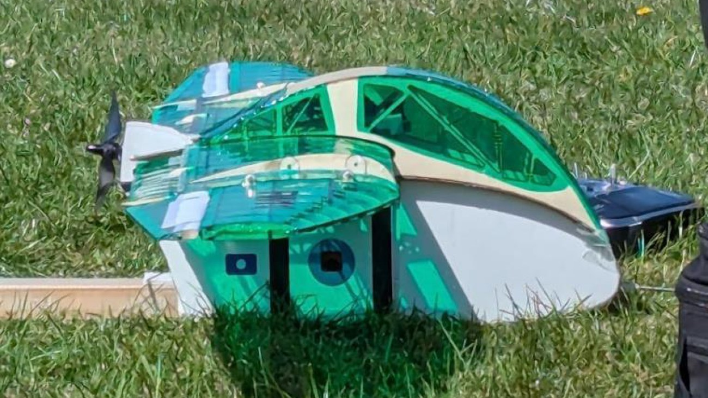
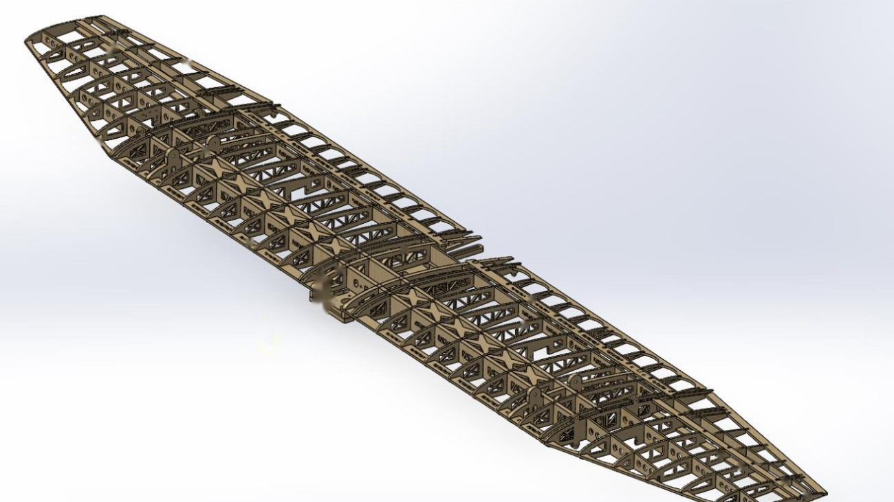
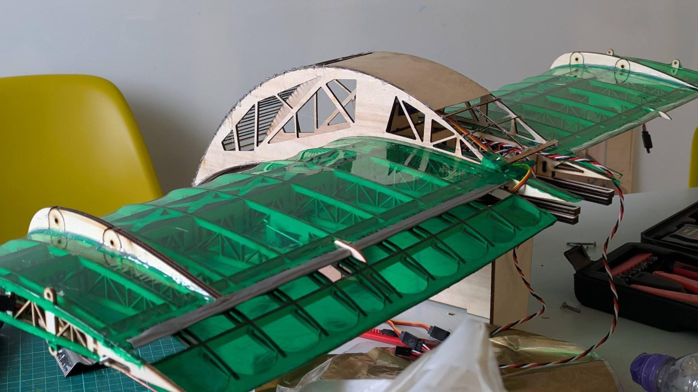

Fixed-Wing UAV Wing Design
Second-year group design project, ranked 1st in the cohort. I was the aerodynamics and stability lead and designed the wing structure, and the wing achieved the largest operating speed range of any team in the year group.

The brief
The task was to design the wing for a fixed-wing UAV, assessed principally on the range between its minimum and maximum operating speed, and subject to fixed limits on mass and volume. A wide speed range demands a wing that works at both ends of its envelope: enough lift at low speed to stay airborne, and low enough drag at high speed to keep accelerating. Optimising heavily for either condition compromises the other or breaches the mass limit.
Structural design of the wing
A wide speed range is only useful if the wing holds its shape while producing it. My work focused on the spar and rib structure, where the requirement was maximum stiffness per unit mass in both bending and torsion.

The spar used a rectangular cross section rather than an I-beam, chosen for ease of manufacture and integration into the ribs. That simpler baseline allowed long uninterrupted sections with the wood grain oriented to exploit the material's anisotropy, which bought stiffness that a more complex section would have given away at the joints.
The structure was developed through physical testing rather than analysis alone, on a purpose-built bending and torsion rig:
- The initial single spar gave a second moment of area of 13,643 mm4.
- After the first structural test, a second spar was added further aft in the ribs, contributing 11,539 mm4.
- After the second test, cross members were added between the two spars, using the spars as webs to form a box spar. This raised the second moment of area and the enclosed volume substantially, the latter being what governs torsional stiffness.
The crosses were included for geodetic-inspired weight reduction while maintaining torsional strength. Both predictions were conservative against test:
- Bending: predicted tip deflection of 18.7 mm against a measured 13.8 mm.
- Torsion: predicted twist of 1.57° against a measured 0.42°.
The rib cutout pattern was based on a NACA study into wooden rib patterns and specific strength, and the same truss logic was carried into the spars, whose second moment of area was reduced progressively along the span to follow the spanwise lift distribution rather than carrying unnecessary material to the tip.
Aerodynamic design
I led the aerodynamic configuration work. The aerofoil was selected in XFOIL with forced transition at 0.16c, screening sections above 12% thickness so the structure had depth to work with, and comparing maximum lift coefficient, maximum lift-to-drag ratio and the angle of attack separating the two. N22 and NACA 2412 came out ahead, and NACA 2412 was selected after further analysis of minimum speed in XFLR5.
Planform taper was chosen using a ranking matrix backed by XFLR5 sweeps, with a Python script used to convert the aerodynamic data into a predicted speed range for each candidate layout. Defining the selection criteria before evaluating the options makes the trade-off explicit and produces a design that can be defended afterwards on its merits.
Speed range at the low end was extended with single-slot Fowler flaps at 30% chord, deployed to 45° with a 0.02c overlap and a 0.04c slot, giving a lift coefficient multiplier of 1.87 and around a 20% increase in area. Counter-rotating rectangular vortex generators were added to delay stall. In flight the wing showed strong roll authority with no tip stall at high angle of attack.

Result
The XFLR5 and Python analysis predicted a 23.1 m/s speed range for the chosen layout. Flight testing measured 19.8 m/s between minimum and maximum airspeed, the largest speed range of all participating groups, and the project was ranked 1st in the cohort.
A 3.3 m/s shortfall against prediction is worth stating rather than hiding. The aerodynamic model was optimistic, most plausibly on the high-lift device performance and on the drag of a real assembled airframe against a clean analysis case. The structural predictions ran the other way and were conservative in both bending and torsion, which indicates the analytical model understated how much the box spar and cross members were contributing. Knowing which direction each model errs in is more useful than either number on its own.
Project management
I produced the Gantt charts and resource plans used to run the project. Work was broken into research, design, manufacture, integration and testing, with the critical path tracked and buffer time placed ahead of high-risk tasks. The project was delivered ahead of schedule, which left time to verify the analysis properly rather than submitting the first result that looked reasonable.
Relevant skills
- Structural design for stiffness per unit mass, validated against physical test rather than analysis alone.
- Iterating a design through successive test results instead of committing to the first configuration.
- Structured decision-making using defined and documented selection criteria.
- Planning and delivering a group project against a critical path.